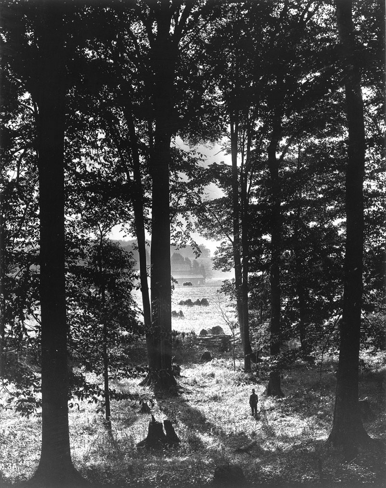

The Early Restoration
If you have ever hungered — amid a hundred voices claiming His name — to find His authority and hear His living voice, you are asking the question this story answers. In the spring of 1820, a fourteen-year-old boy carried it to God Himself. And heaven answered.
Download the complete print edition ↓The grove west of the Smith farm, about 1907. George Edward Anderson (1860–1928), photograph, about 1907. Public domain. Source
“Philip saith unto him, Come and see.” (John 1:46). Read the story, walk the places, meet the people and read their own words.
Twelve chapters from Tyndale’s cell to Carthage, with the PDF and a full narrated audiobook.
Map37 places on an interactive map, each linked to its chapter.
People93 short biographies with historical portraits where they exist.
TimelineThe key dates from 1536 to 1844, in order.
TravelAddresses and official pages for the historic sites you can visit today.
SourcesThe first accounts, in the Joseph Smith Papers and other trusted collections.
StudyA short guide for each chapter, for families and classes.
.jpg){kind=link}